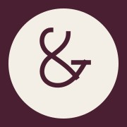
Schaeffer & Strey · Case StudyEstudos de conceito · Bruxelas
Cinco lugares, cinco experiências digitais.
Estudos de conceito da Schaeffer & Strey para negócios de Bruxelas, reunindo identidade visual, informação prática e interações próprias de cada lugar.
Projetos demonstrativos independentes. Não representam encomenda, aprovação ou vínculo com os estabelecimentos. Informações sujeitas a confirmação. Fotografias de visitantes/Google Maps e capturas que as continham foram excluídas; as capturas foram refeitas com imagens ilustrativas licenciadas; documentos e fachadas sem licença seguem identificados como indisponíveis.

00 · Schaeffer & Strey · Portfólio da série · Bruxelas
Uma coleção, cinco linguagens.
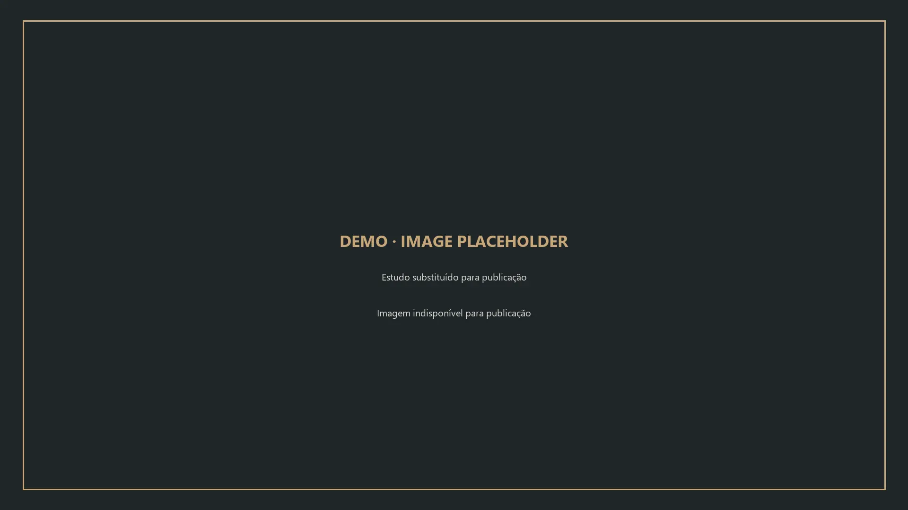
Contexto e desafio
Comparar os cinco projetos lado a lado sem apagar o que cada um tem de próprio, com capturas das demonstrações públicas.
Solução
Uma vitrine editorial clara e estruturada sob a identidade Schaeffer & Strey: capa com as telas dos cinco sites em camadas que respondem ao ponteiro, filtro por segmento (cafés, bares, restaurantes), capturas reais da versão pública em um visualizador e acesso direto às demonstrações — além dos estudos de caso com pranchas refeitas e descrição das interações.
Direção visual
Paper Ivory (#F3EEE6) como base editorial, Studio Burgundy (#4B1F32) nos blocos institucionais, Editorial Ink (#171417) e Warm Stone (#B9B1A7) para hierarquia e divisões, com Signal Coral (#E56B5D) como ponto focal decisivo.
Tipografia
- Rubik (600 / 700) — Títulos e chamadas de destaque
- Noto Sans (400 / 500) — Texto corrido, botões e interface
- Noto Serif (400 / 400i) — Acentos editoriais e subtítulos
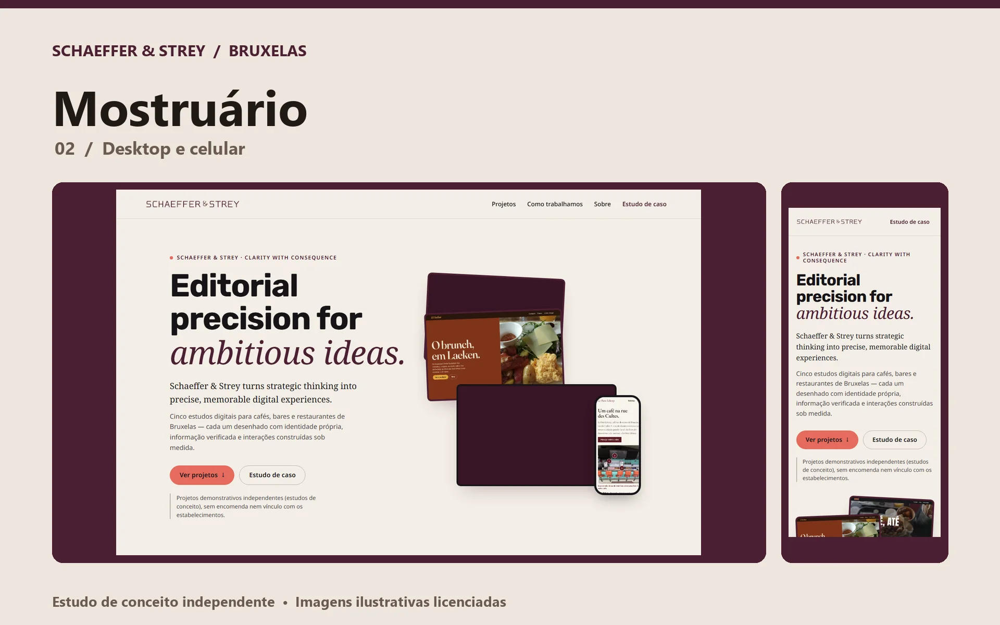
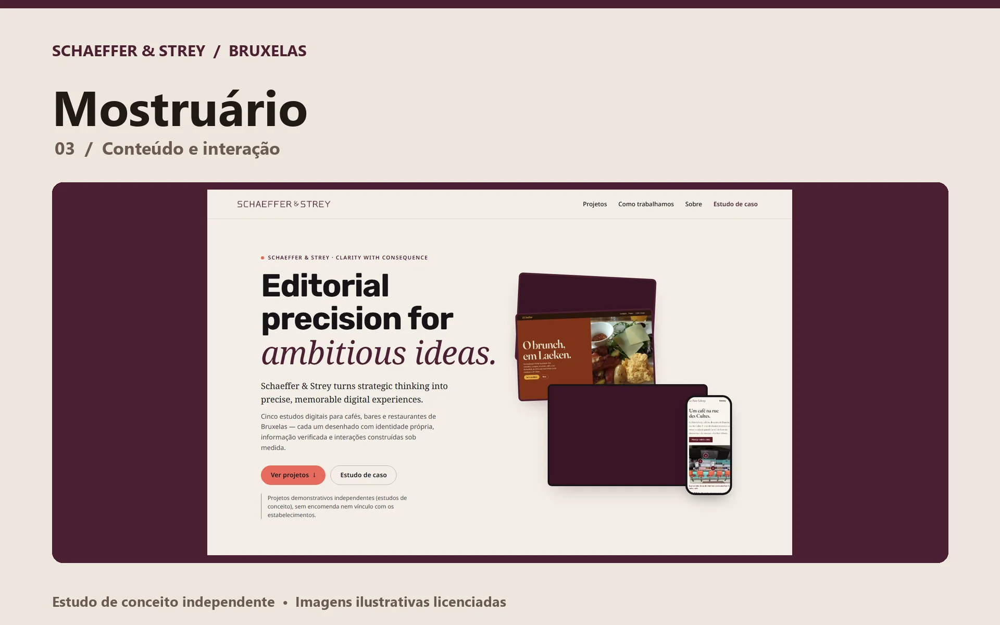

Escopo e limites
- Reúne apenas os cinco protótipos desta série
- Capturas e vídeo gravados nas demonstrações locais
- Não é um site publicado
Ficha técnica
- Natureza
- Estudo de conceito independente
- Escopo
- Direção visual Schaeffer & Strey, interface, implementação e interações descritas acima (existentes no protótipo)
- Créditos
- Identidade Schaeffer & Strey. Capturas da versão pública com fotos ilustrativas licenciadas; vídeos locais omitidos. Rubik, Noto Sans e Noto Serif (SIL Open Font License 1.1).
- Status
- Estudo de caso público com imagens licenciadas e ausências identificadas
01 · Kanel · Café e padaria de bairro · Uccle
Um cardápio que convida a explorar.

Contexto e desafio
Organizar a descoberta dos produtos e as informações do local numa página só, para quem decide no celular.
Solução
Cardápio logo depois da abertura, em abas (cinnamon buns, brioches, cafés); cada item abre seus detalhes ali mesmo, num bloco expansível, sem sair da página nem perder o lugar na lista. Canais de contato só aparecem quando confirmados.
Direção visual
Creme, canela e ameixa — uma padaria quente — com a Fraunces dando o tom artesanal; abertura com foto, espiral desenhada e movimento suave.
Tipografia
- Fraunces — Títulos, com itálico
- Segoe UI Variable — Texto e interface
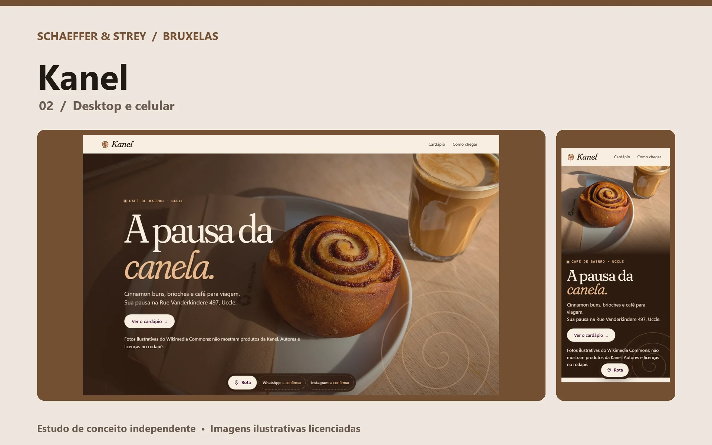
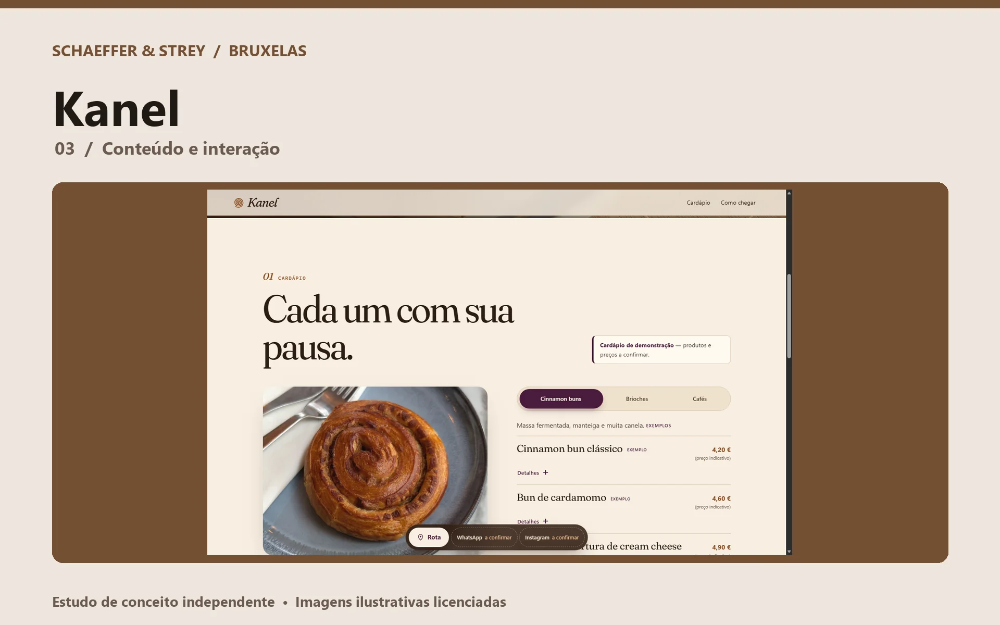
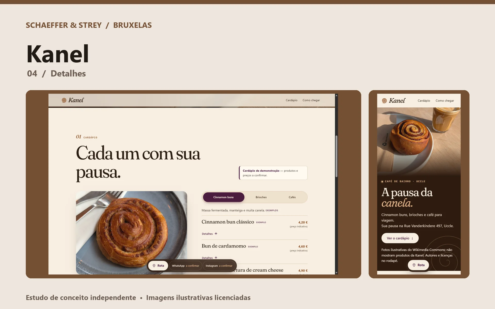
Escopo e limites
- Cardápio, preços e descrições são de demonstração (marcados “Texto de exemplo” / “a confirmar”) — ingredientes não confirmados
- Fotos ilustrativas do Wikimedia Commons: não mostram produtos da Kanel
- Sem pedidos nem reservas
Ficha técnica
- Natureza
- Estudo de conceito independente
- Escopo
- Direção visual, interface, implementação e as interações descritas acima (existentes no protótipo)
- Créditos
- Imagens ilustrativas: Wikimedia Commons — Andy Li, CC0 1.0 (2); Msayago10, CC BY-SA 4.0 (recorte e ajuste de cor); Drew Coffman, CC0 1.0. Fraunces (SIL Open Font License 1.1).
- Status
- Estudo de caso público com imagens licenciadas e ausências identificadas
02 · Le Petit Lion · Bar tradicional · Marolles · rue Haute 232
O ambiente também faz parte da experiência.
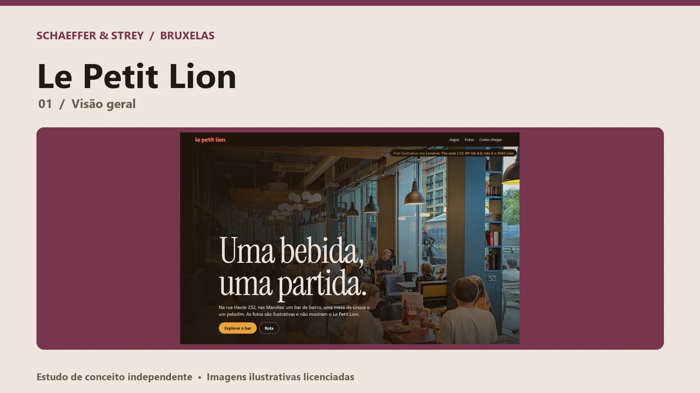
Contexto e desafio
Aproximar as fotos, a escolha do ambiente e a descrição — antes, a foto que mudava ficava fora da tela de quem escolhia.
Solução
Cenas com imagem e controles lado a lado: abas O bar / Sinuca / Pebolim alinhadas ao topo da foto, com o detalhe logo abaixo. A minissinuca ganhou bloco próprio, com mira, força, tacada por arrasto e controles por teclado.
Direção visual
Um estaminet à noite: madeira escura, âmbar de filamento e feltro verde, com o letreiro vermelho em minúsculas (Fredoka) e títulos em Instrument Serif.
Tipografia
- Instrument Serif — Títulos
- Fredoka — Letreiro “le petit lion”
- Segoe UI (sistema) — Texto e controles
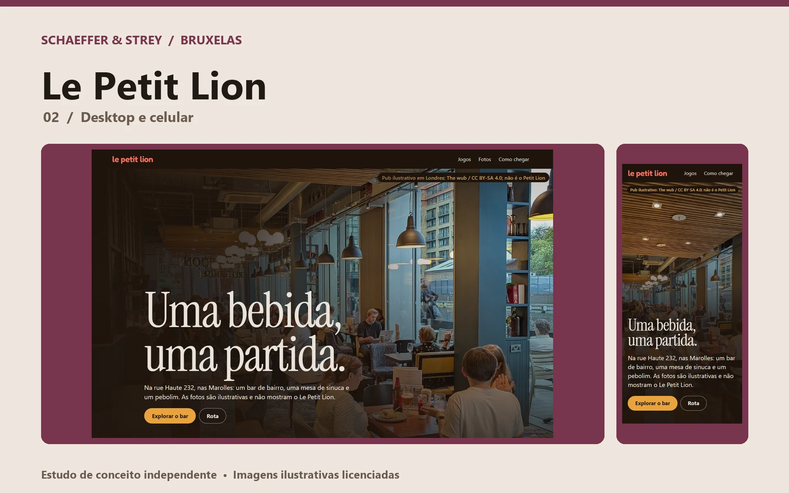
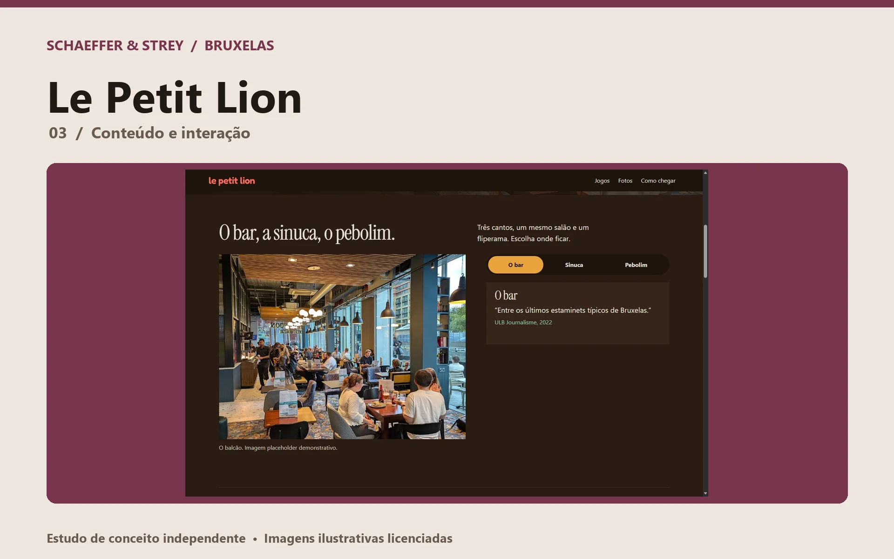
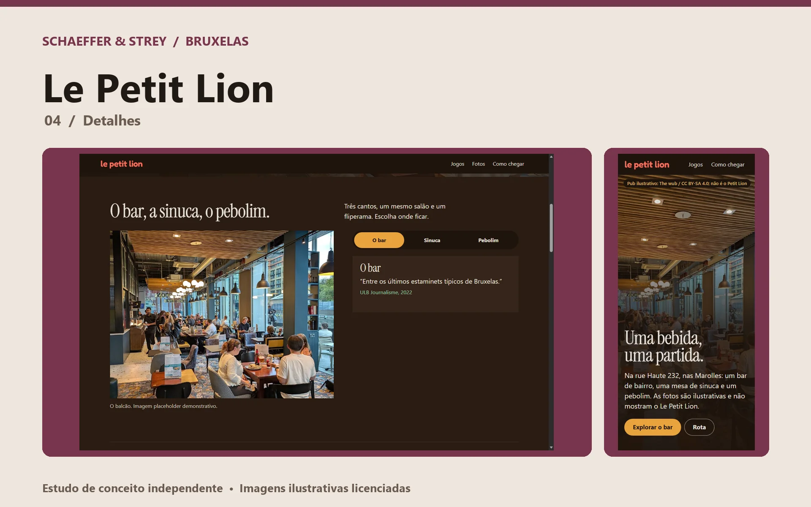
Escopo e limites
- Minijogo simples, não um simulador profissional: sem efeito (spin), pontas das tabelas simplificadas
- Horários de fonte única, “não confirmados pelo bar”
- Fotografias restritas à prévia local excluídas; capturas refeitas com imagens ilustrativas licenciadas.
Ficha técnica
- Natureza
- Estudo de conceito independente
- Escopo
- Direção visual, interface, implementação e as interações descritas acima (existentes no protótipo)
- Créditos
- Fotos de visitantes removidas; imagens ilustrativas licenciadas e novas capturas da versão pública. Créditos nas demonstrações. Instrument Serif e Fredoka (SIL Open Font License 1.1).
- Status
- Estudo de caso público com imagens licenciadas e ausências identificadas
03 · El Sabor · Restaurante de brunch · Laeken · bd Émile Bockstael 255
Sabores apresentados com clareza.

Contexto e desafio
Equilibrar o cardápio, os filtros e as listas de preços sem que um esmague o outro.
Solução
Grade comum para imagens ilustrativas e listas, filtros por categoria (Tudo, Omeletes, Extras, Bebidas quentes) e uma ficha de prato que abre a partir da miniatura, com navegação entre fotos.
Direção visual
Terra cozida e ouro sobre um fundo noite-terra, com a Fraunces nos títulos e nomes de pratos.
Tipografia
- Fraunces — Títulos e nomes de pratos
- Segoe UI (sistema) — Texto, preços e filtros
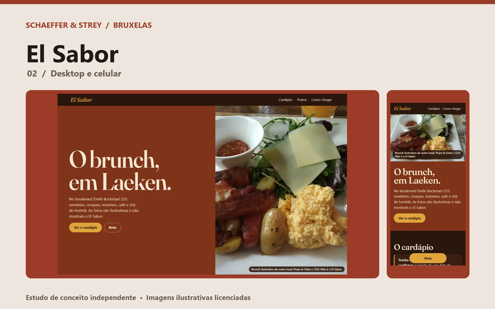
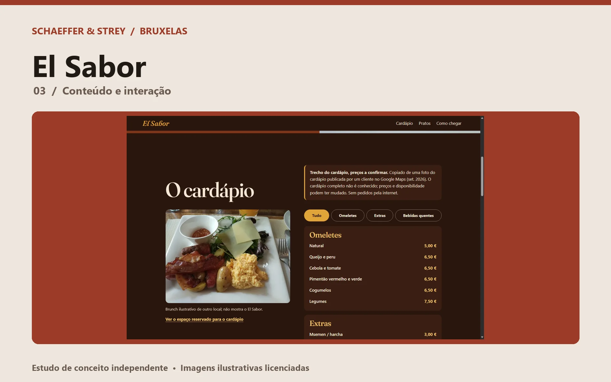
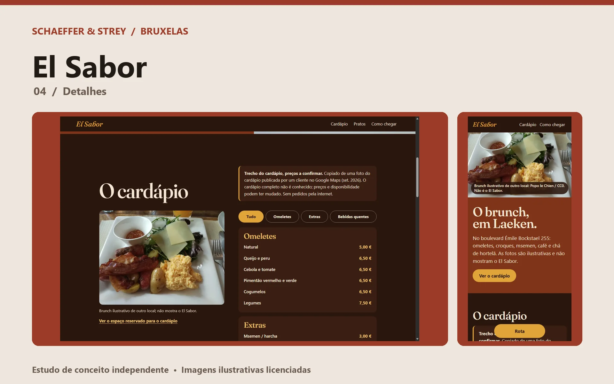
Escopo e limites
- Preços copiados de uma foto de cliente (set. 2026), marcados “a confirmar”
- Nomes exatos dos pratos fotografados desconhecidos: só descrições visuais
- Sem pedidos pela internet
Ficha técnica
- Natureza
- Estudo de conceito independente
- Escopo
- Direção visual, interface, implementação e as interações descritas acima (existentes no protótipo)
- Créditos
- Fotos de visitantes removidas; imagens ilustrativas licenciadas e novas capturas da versão pública. Créditos nas demonstrações. Fraunces (SIL Open Font License 1.1).
- Status
- Estudo de caso público com imagens licenciadas e ausências identificadas
04 · Keufté Ixelles · Sanduíches e grelhados · Ixelles · perto de Flagey
Calor visual, escolha direta.
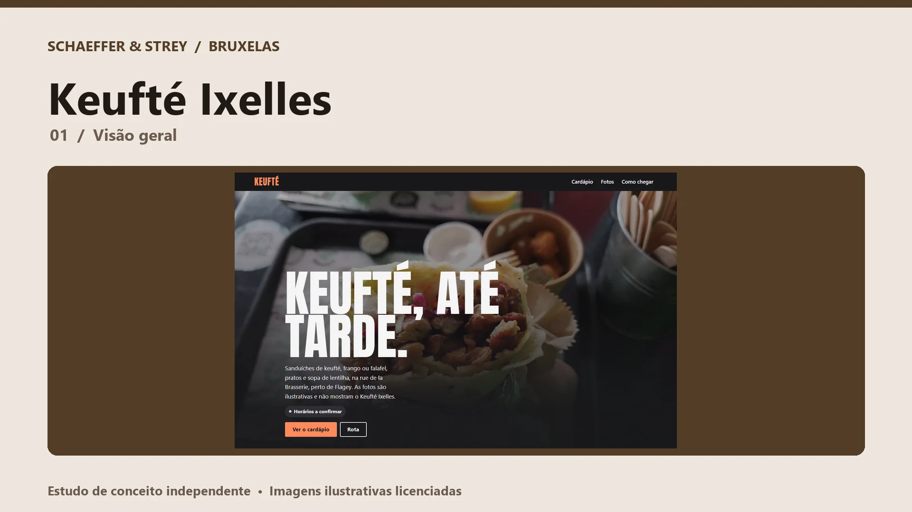
Contexto e desafio
Comunicar o caráter da cozinha e, ao mesmo tempo, facilitar a leitura de um cardápio longo.
Solução
Brasas em movimento no topo e uma faixa contínua de fotos dão o calor; categorias em abas, seletor de tamanho Normal/Gigante e preços alinhados à direita tornam a escolha direta.
Direção visual
Carvão e brasa, uma única cor de acento e a Anton em caixa alta, como um letreiro de rua.
Tipografia
- Anton — Títulos em caixa alta
- Segoe UI (sistema) — Texto, preços e controles
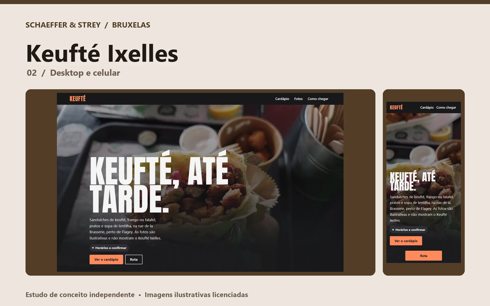

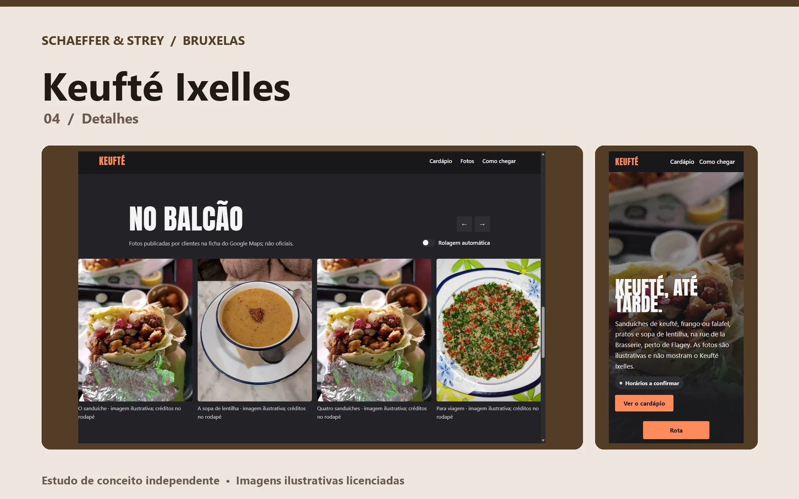
Escopo e limites
- Preços de uma foto de cliente (jan. 2026) e horários de fonte única: “a confirmar”
- Sem pedido, carrinho nem pagamento
- Fotografias restritas à prévia local excluídas; capturas refeitas com imagens ilustrativas licenciadas.
Ficha técnica
- Natureza
- Estudo de conceito independente
- Escopo
- Direção visual, interface, implementação e as interações descritas acima (existentes no protótipo)
- Créditos
- Fotos de visitantes removidas; imagens ilustrativas licenciadas e novas capturas da versão pública. Créditos nas demonstrações. Anton (SIL Open Font License 1.1).
- Status
- Estudo de caso público com imagens licenciadas e ausências identificadas
05 · Le Petit Liberty · Café-bar · Centro de Bruxelas · rue des Cultes 9
Uma fachada como ponto de partida.

Contexto e desafio
Apresentar um café-bar clássico sem fontes sobre sua origem — sem inventar história.
Solução
Uma imagem ilustrativa de outro café vira o ponto de partida para três pontos interativos; as fotos históricas sem licença seguem indisponíveis e as bebidas aparecem em blocos expansíveis.
Direção visual
Papel, veludo bordô e latão, com a EB Garamond em tom editorial.
Tipografia
- EB Garamond — Títulos e texto editorial, com itálico
- Segoe UI (sistema) — Interface e legendas
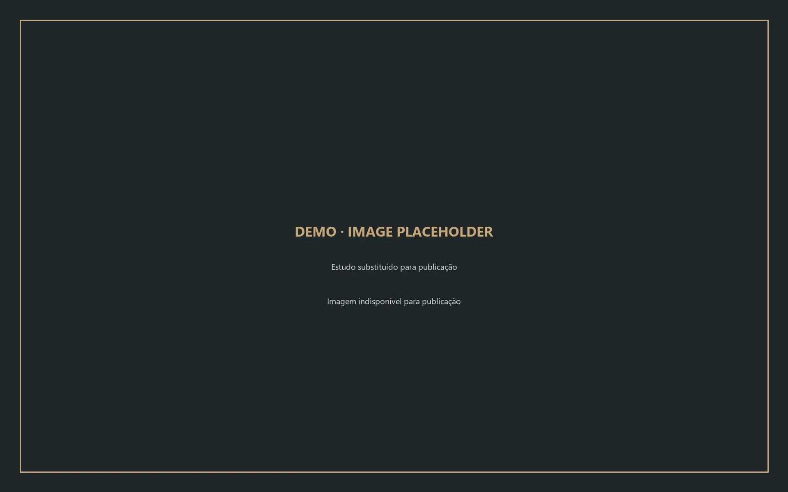
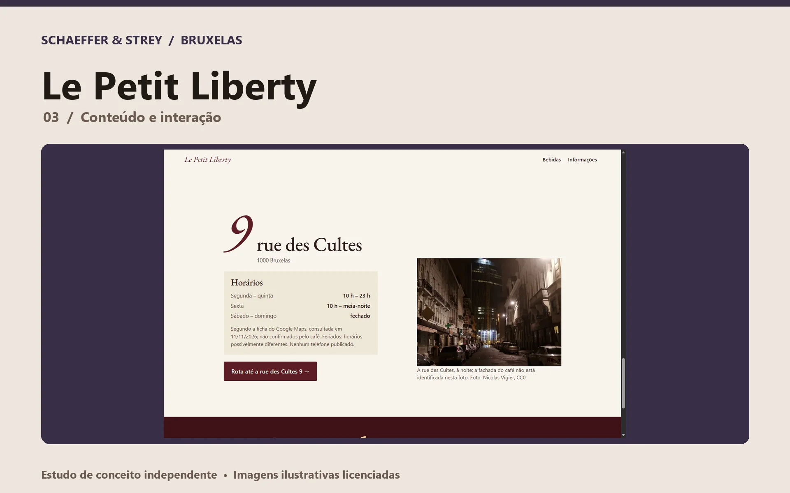

Escopo e limites
- Nenhuma história do estabelecimento além do que as fotos datadas mostram
- Cardápio de exemplo, sinalizado
- Fotografias restritas à prévia local excluídas; capturas refeitas com imagens ilustrativas licenciadas.
Ficha técnica
- Natureza
- Estudo de conceito independente
- Escopo
- Direção visual, interface, implementação e as interações descritas acima (existentes no protótipo)
- Créditos
- Fotos de visitantes removidas; imagens ilustrativas licenciadas e novas capturas da versão pública. Créditos nas demonstrações. EB Garamond (SIL Open Font License 1.1).
- Status
- Estudo de caso público com imagens licenciadas e ausências identificadas
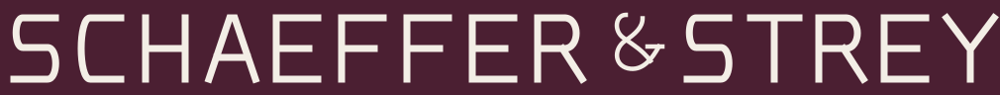
Ficha técnica da série
- Estúdio
- Schaeffer & Strey — Editorial precision for ambitious ideas.
- Natureza
- Estudos de conceito independentes (5) e o portfólio editorial que os reúne.
- Tecnologia
- HTML, CSS e JavaScript (módulos ES), sem framework nem dependências. Canvas 2D (mesa de sinuca, brasas); <dialog> nativo para fichas e visualizadores; abas e acordeões acessíveis por teclado. Conferido em 320, 390, 768 e 1440 px, com e sem JavaScript e com movimento reduzido.
- Gravações
- Interações reais nos protótipos locais (Chrome sem interface, GPU), 1920 × 1080, H.264 crf 18, yuv420p, 30 quadros/s (captura média de 33 a 89 quadros/s, sem duplicação para inflar a taxa). O círculo branco é um cursor de demonstração.
- Status
- Estudo de caso público; fotografias restritas à prévia local foram excluídas e as capturas públicas usam imagens ilustrativas licenciadas.
- Tipografia
- Rubik, Noto Sans, Noto Serif, Instrument Serif, Fraunces, Fredoka, Anton e EB Garamond — SIL Open Font License 1.1.
Projetos demonstrativos independentes. Não representam encomenda, aprovação ou vínculo com os estabelecimentos. Informações sujeitas a confirmação. Fotografias de visitantes/Google Maps e capturas que as continham foram excluídas; as capturas foram refeitas com imagens ilustrativas licenciadas; documentos e fachadas sem licença seguem identificados como indisponíveis.